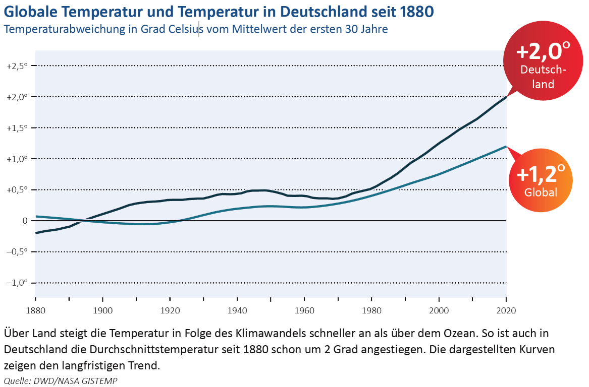

Datenanalyse: Klimadaten der NASA
Contents
Datenanalyse: Klimadaten der NASA#
Einige Libraries, die man fast immer für die Datenverarbeitung benötigt:
import numpy as np
import pandas as pd
import plotly.offline as py
py.init_notebook_mode(connected=True)
import plotly.graph_objs as go
import plotly.tools as tls
import seaborn as sns
import time
import warnings
warnings.filterwarnings('ignore')
print('Setup Complete')
Setup Complete
Einlesen von Klimadaten#
Im Folgenden Nutzen wir globale Klimadaten, die auf der Webseite der NASA zu finden sind: https://data.giss.nasa.gov/gistemp/. Hierbei handelt es sich um Temperaturdaten, die Anomalien gegenüber dem Mittelwert in den Jahren 1951-1980 aufweisen.
Es werden Daten von Dateien (online oder offline) eingelesen mit der Python Bilbiothek pandas. Die Daten werden in sogenannten DataFrames gespeichert.
#link = "https://data.giss.nasa.gov/gistemp/graphs_v4/graph_data/Global_Mean_Estimates_based_on_Land_and_Ocean_Data/graph.csv"
link = 'data/graph.csv'
global_mean = pd.read_csv(link, header = 1)
Um das DataFrame auszugeben, können beispielsweise die ersten 5 Spalten ausgegeben werden:
global_mean.head(5) # Ausgabe der ersten 5 Spalten
#global_mean.tail(5) # Ausgabe der letzten 5 Spalten
#global_mean # Ausgabe des DataFrames
| Year | No_Smoothing | Lowess(5) | |
|---|---|---|---|
| 0 | 1880 | -0.17 | -0.09 |
| 1 | 1881 | -0.08 | -0.13 |
| 2 | 1882 | -0.11 | -0.17 |
| 3 | 1883 | -0.18 | -0.20 |
| 4 | 1884 | -0.28 | -0.24 |
Einzelne Spalten kann man sich anzeigen lassen, indem den Namen des zugehörigen DataFrames nutzt:
global_mean['Year']
0 1880
1 1881
2 1882
3 1883
4 1884
...
137 2017
138 2018
139 2019
140 2020
141 2021
Name: Year, Length: 142, dtype: int64
Daten plotten#
Zunächst wollen wir die beiden Spalten, No_Smoothing and Lowess(5) gegenüber der Zeitachse Year plotten. Hierfür benützen wir die Python Library matplotlib:
import matplotlib.pyplot as plt
plt.style.use('default')
plt.figure(figsize=(10,5))
plt.rcParams['font.size'] = 14;
plt.plot(global_mean['Year'], global_mean['No_Smoothing'], label = 'Werte')
plt.plot(global_mean['Year'], global_mean['Lowess(5)'], label = 'Glättung (NASA)')
plt.xlabel('Jahr')
plt.ylabel("Jahresmitteltemperaturabweichung [°C]")
plt.legend();
plt.grid();
Daten verarbeiten#
Die Bibliothek pandas ist sehr umfangreich und wird viel zur Datenverarbeitung genutzt. Im folgenden dazu einige Beispiele:
Statistische Größen: Mittelwert, Standardabweichung, Min, Max#
Für jede Spalte lassen sich statistische Größen wie z.B. die Anzahl der Einträge pro Spalte, deren Mittelwert, Standardabweichung, Minimal- und Maximalwert bestimmen:
global_mean.describe()
| Year | No_Smoothing | Lowess(5) | |
|---|---|---|---|
| count | 142.000000 | 142.000000 | 142.000000 |
| mean | 1950.500000 | 0.053169 | 0.053169 |
| std | 41.135953 | 0.364161 | 0.352324 |
| min | 1880.000000 | -0.490000 | -0.420000 |
| 25% | 1915.250000 | -0.200000 | -0.227500 |
| 50% | 1950.500000 | -0.065000 | -0.040000 |
| 75% | 1985.750000 | 0.252500 | 0.235000 |
| max | 2021.000000 | 1.010000 | 0.930000 |
Beispiel: Maximum und zugehöriges Jahr ausgeben#
Dies können wir benutzen, um beispielsweise die maximale Temperaturdifferenz zu ermitteln:
global_mean["No_Smoothing"].max()
1.01
Wenn wir wissen wollen, wann diese maximale Temperaturdifferenz auftrat, muss der zugehörige Index dieses Events gespeichert werden:
index_max = global_mean["No_Smoothing"].idxmax()
print(index_max)
136
Diesen Index können wir nun benutzen, um mittels .loc Befehl den Eintrag zu diesem Index auszugeben:
global_mean.loc[index_max]
Year 2016.00
No_Smoothing 1.01
Lowess(5) 0.87
Name: 136, dtype: float64
Beispiel: Daten aufsteigend/absteigend sortieren#
Mit .sort_values("Spaltenname") können wir auch die Tabelle nach dem definierten Spaltennamen sortieren (standardmäßig in ansteigender Reihenfolge):
global_mean.sort_values("No_Smoothing")
| Year | No_Smoothing | Lowess(5) | |
|---|---|---|---|
| 29 | 1909 | -0.49 | -0.41 |
| 24 | 1904 | -0.47 | -0.31 |
| 37 | 1917 | -0.47 | -0.30 |
| 31 | 1911 | -0.45 | -0.40 |
| 30 | 1910 | -0.44 | -0.42 |
| ... | ... | ... | ... |
| 135 | 2015 | 0.90 | 0.83 |
| 137 | 2017 | 0.92 | 0.91 |
| 139 | 2019 | 0.98 | 0.93 |
| 140 | 2020 | 1.01 | 0.93 |
| 136 | 2016 | 1.01 | 0.87 |
142 rows × 3 columns
Mit ascending=False wird absteigend sortiert:
global_mean.sort_values("No_Smoothing", ascending = False)
| Year | No_Smoothing | Lowess(5) | |
|---|---|---|---|
| 140 | 2020 | 1.01 | 0.93 |
| 136 | 2016 | 1.01 | 0.87 |
| 139 | 2019 | 0.98 | 0.93 |
| 137 | 2017 | 0.92 | 0.91 |
| 135 | 2015 | 0.90 | 0.83 |
| ... | ... | ... | ... |
| 30 | 1910 | -0.44 | -0.42 |
| 31 | 1911 | -0.45 | -0.40 |
| 24 | 1904 | -0.47 | -0.31 |
| 37 | 1917 | -0.47 | -0.30 |
| 29 | 1909 | -0.49 | -0.41 |
142 rows × 3 columns
WICHTIG: Der Dataframe global_mean wird dadurch nicht verändert, es handelt sich nur um eine Anzeige!
Daten glätten#
Die von der NASA verwendete Glättung ist die LOcally WEighted Scatter-plot Smoother (LOWESS). Dabei wird in einem lokal zu definierenden Bereich eine lineare Regression durchgeführt. Eine genauere Erklärung zur Methode findet ihr auf Youtube.
Es gibt natürlich viele Methoden und Filter, um Daten zu glätten. Wir wollen nun versuchen, die Methode der NASA zu rekonstruieren. Hierfür benutzen wir die Python Library statsmodels und erstellen eine weitere Spalte Lowess(own) in unserem DataFrame global_mean. In diese Spalte schreiben wir die geglätteten Werte von den Rohdaten global_mean["No_Smoothing"] indem wir die Funktion lowessaufrufen. Details zu Nutzung der Funktion findet ihr https://www.statsmodels.org:
an erster Stelle in der Funktion werden die Y-Werte eingegeben, hier
global_mean["No_Smoothing"]an zweiter Stelle in der Funktion werden die X-Werte eingegeben, hier
global_mean["Year"]die Option
fracist eine Zahl zwischen 0 und 1. Dies ist der Anteil der Daten, der bei der Schätzung der einzelnen y-Werte verwendet wird.Ausgegeben wird zweidimensionalas Array. Die erste Spalte enthält die sortierten x-Werte und die zweite Spalte die zugehörigen geschätzten y-Werte. Um die zweite Spalte in den DataFrame zu speichern, wählen wir diese mit
[:,1]aus.
from statsmodels.nonparametric.smoothers_lowess import lowess
global_mean["Lowess(own)"] = lowess(global_mean["No_Smoothing"],global_mean["Year"], frac=1/14)[:,1]
global_mean
| Year | No_Smoothing | Lowess(5) | Lowess(own) | |
|---|---|---|---|---|
| 0 | 1880 | -0.17 | -0.09 | -0.092698 |
| 1 | 1881 | -0.08 | -0.13 | -0.129873 |
| 2 | 1882 | -0.11 | -0.17 | -0.167172 |
| 3 | 1883 | -0.18 | -0.20 | -0.203172 |
| 4 | 1884 | -0.28 | -0.24 | -0.239029 |
| ... | ... | ... | ... | ... |
| 137 | 2017 | 0.92 | 0.91 | 0.911976 |
| 138 | 2018 | 0.85 | 0.92 | 0.921410 |
| 139 | 2019 | 0.98 | 0.93 | 0.926072 |
| 140 | 2020 | 1.01 | 0.93 | 0.929365 |
| 141 | 2021 | 0.84 | 0.93 | 0.931468 |
142 rows × 4 columns
plt.style.use('default')
plt.figure(figsize=(10,5))
plt.rcParams['font.size'] = 14;
plt.ylabel("Jahresmitteltemperaturabweichung [°C]")
plt.xlabel("Jahr")
plt.plot(global_mean["Year"],global_mean["No_Smoothing"], ls="-", lw=1, marker="s", ms=3, color="tab:gray", alpha=0.5, label="Werte");
plt.plot(global_mean["Year"],global_mean["Lowess(5)"], lw=4, color="tab:blue", label="Glättung (NASA)");
plt.plot(global_mean["Year"],global_mean["Lowess(own)"],ls="--",lw=2, color="orange", label="eigene Glättung (LOWESS f=1/14)");
plt.legend();
plt.grid();

Die Verwendung des rollenden Mittelwertes hat das Problem, dass dabei immer Werte fehlen (Anfang/Ende). Die gewählten gewählten Parametern für das LOWESS liefern ähnliche Ergebnisse im Vergleich zur Original Glättung der NASA.
Daten bereinigen#
Beim Umweltbundesamt gibt es aktuelle Zahlen zur Erwärmung der Luftemperatur in Deutschland. Die Werte befinden sich in dieser Exceltabelle, welche mit dem Befehl pd.read_excel() eingelesen werden kann, wobei hierbei der Name des ExcelSheets und die verwendenten Spaltennummern angegeben werden können. Allerdings liegen in diesem Datenset einige Messpunkte nicht vor, wie wir gleich bei der Ausgabe des DataFrames sehen werden:
link = "https://www.umweltbundesamt.de/sites/default/files/medien/384/bilder/dateien/3-bis-8_abb-tab_tmt_2021-05-12.xlsx"
GER_mean = pd.read_excel(link,sheet_name="3_DWD",usecols=[1,19]) # einlesen
GER_mean.columns=["Jahr","Jahresmitteltemperatur [°C]"]
GER_mean
| Jahr | Jahresmitteltemperatur [°C] | |
|---|---|---|
| 0 | 1880.0 | NaN |
| 1 | 1881.0 | 7.335200 |
| 2 | 1882.0 | 8.366100 |
| 3 | 1883.0 | 7.909900 |
| 4 | 1884.0 | 8.589200 |
| ... | ... | ... |
| 142 | NaN | 8.243483 |
| 143 | NaN | 8.558950 |
| 144 | NaN | 8.870183 |
| 145 | NaN | 9.303366 |
| 146 | NaN | 7.775830 |
147 rows × 2 columns
Es fällt auf, dass an einigen Stellen Datenpunkte fehlen (wie sollte es auch anders sein in Deutschland…). Bevor die Daten weiter verarbeitet werden können, müssen Sie daher bereinigt werden um die NaN zu entfernen, und die Jahreszahlen als Integer definiert werden:
GER_mean.dropna(inplace=True) # Zeilen mit "NaN" Werte entfernt und DataFrame wird gespeichert (!)
GER_mean["Jahr"] = GER_mean["Jahr"].astype(int) # Spalte "Jahr" als integer definieren
GER_mean
| Jahr | Jahresmitteltemperatur [°C] | |
|---|---|---|
| 1 | 1881 | 7.3352 |
| 2 | 1882 | 8.3661 |
| 3 | 1883 | 7.9099 |
| 4 | 1884 | 8.5892 |
| 5 | 1885 | 7.7726 |
| ... | ... | ... |
| 136 | 2016 | 9.5000 |
| 137 | 2017 | 9.6000 |
| 138 | 2018 | 10.5000 |
| 139 | 2019 | 10.3000 |
| 140 | 2020 | 10.4000 |
140 rows × 2 columns
Temperaturabweichung berechnen#
Für die Daten aus Deutschland müssen noch die Temperaturabweichungen zum Mittelwert zwischen 1881 und 1910 berechnet werden, damit sie zu dem anderen Datensatz vergleichbar sind und einem Diagramm geplottet werden können. Im folgenden berechnen wir:
bis zum Jahr 1910 den Mittelwert mit der Funktion
.mean(), und zwar von allen Jahresmitteltemperatur-WertenGER_mean["Jahresmitteltemperatur [°C]"], die vor 1911 aufgenommen worden sind. Diesen Mittelwert über die Jahre 1881-1910 speichern wir inGER_mean1881_1910.die Differenz zwischen Jahresmitteltemperatur und dem eben berechneten Mittelwert und erhalten somit die Jahresmitteltemperaturabweichung, welche wir in eine neue Spalte des DataFrames schreiben,
GER_mean["Jahresmitteltemperaturabweichung [°C]"]
# Temperaturabweichung berechnen (Abweichung von Mittelwert der Temperatur zwischen 1881 und 1900)
GER_mean1881_1910 = GER_mean.loc[GER_mean["Jahr"] <= 1910,"Jahresmitteltemperatur [°C]"].mean()
GER_mean["Jahresmitteltemperaturabweichung [°C]"] = GER_mean["Jahresmitteltemperatur [°C]"] - GER_mean1881_1910
GER_mean
| Jahr | Jahresmitteltemperatur [°C] | Jahresmitteltemperaturabweichung [°C] | |
|---|---|---|---|
| 1 | 1881 | 7.3352 | -0.482663 |
| 2 | 1882 | 8.3661 | 0.548237 |
| 3 | 1883 | 7.9099 | 0.092037 |
| 4 | 1884 | 8.5892 | 0.771337 |
| 5 | 1885 | 7.7726 | -0.045263 |
| ... | ... | ... | ... |
| 136 | 2016 | 9.5000 | 1.682137 |
| 137 | 2017 | 9.6000 | 1.782137 |
| 138 | 2018 | 10.5000 | 2.682137 |
| 139 | 2019 | 10.3000 | 2.482137 |
| 140 | 2020 | 10.4000 | 2.582137 |
140 rows × 3 columns
Temperaturantstieg mittels Linearer Regression bestimmen#
Mittels linearer Regression kann der Temperaturanstieg aus den Daten berechnet werden. Hierfür wird die Python Library numpy benutzt und die Funktion polyfit aufgerufen und in als model gespeichert. Diese Funktion benutzt die Least-Square Methode für polynomische Modelle. Weitere Informationen zu der Funktion finder ihr hier.
import numpy as np
import pandas as pd
x=GER_mean["Jahr"]
y=GER_mean["Jahresmitteltemperatur [°C]"]
model = np.polyfit(x, y, 1) # 1. Wert = Anstieg , 2. Wert = Schnittpunkt mit y-Achse
y_model = model[0]*x+model[1]
plt.style.use('default')
plt.figure(figsize=(10,4))
plt.rcParams['font.size'] = 14;
plt.ylabel("Jahresmitteltemperaturabweichung [°C]")
plt.xlabel("Jahr")
plt.plot(GER_mean["Jahr"],GER_mean["Jahresmitteltemperatur [°C]"], ls="-", lw=1,marker="s", ms=3, color="gray",alpha=0.5, label="Deutschland Land (Werte) [DWD]");
plt.plot(x,y_model, ls="-", lw=3, color="tab:blue",alpha=0.5, label=f"lineare Regression (y={model[0]:.3f}*x+{model[1]:.3f})");
plt.legend(fontsize=12);
plt.grid();
print(f"Temperaturanstieg pro Jahr (von 1981 bis 2020): {model[0]:.3f}°C/Jahr")
print(f"Temperaturanstieg seit Beginn der Messung: {(y_model.iloc[-1]-y_model.iloc[0]):.3f}°C")
Temperaturanstieg pro Jahr (von 1981 bis 2020): 0.012°C/Jahr
Temperaturanstieg seit Beginn der Messung: 1.611°C
Vorsicht: Die lineare Regression bezieht hier den ganzen Zeitraum mit ein, betrachten wir für den Temperaturgradienten nur die Daten von 1980 bis 2020:
x=GER_mean.loc[GER_mean["Jahr"] >= 1980,"Jahr"]
y=GER_mean.loc[GER_mean["Jahr"] >= 1980,"Jahresmitteltemperatur [°C]"]
model = np.polyfit(x, y, 1) # 1. Wert = Anstieg , 2. Wert = Schnittpunkt mit y-Achse
y_model = model[0]*x+model[1]
print(f"Temperaturanstieg pro Jahr (von 1980 bis 2020): {model[0]:.3f}°C/Jahr")
Temperaturanstieg pro Jahr (von 1980 bis 2020): 0.045°C/Jahr
plt.style.use('default')
plt.figure(figsize=(10,4))
plt.rcParams['font.size'] = 14;
plt.ylabel("Jahresmitteltemperaturabweichung [°C]")
plt.xlabel("Jahr")
plt.plot(GER_mean["Jahr"],GER_mean["Jahresmitteltemperatur [°C]"], ls="-", lw=1,marker="s", ms=3, color="gray",alpha=0.5, label="Deutschland Land (Werte) [DWD]");
plt.plot(x,y_model, ls="-", lw=3, color="tab:blue",alpha=0.5, label=f"lineare Regression (y={model[0]:.3f}*x+{model[1]:.3f})");
plt.legend(fontsize=12);
plt.grid();

Aufgaben#
Aufgabe 1: Daten aus Deutschland glätten und plotten#
Glätte die Daten aus Deutschland, die im letzten Abschnitt bereits bereinigt wurden. Hierfür sollen lediglich die Abweichungen der Jahresmitteltemperaturen betrachtet werden (also das, was eben berechnet wurde). Stelle anschließend die Abweichungswerte zusammen mit den geglätteten Werten grafisch dar und beschrifte das Diagramm entsprechend.
# Berechnung der geglätteten Daten und Speichern im DataFrame:
from statsmodels.nonparametric.smoothers_lowess import lowess
GER_mean["Lowess(own)"] = lowess(GER_mean["Jahresmitteltemperaturabweichung [°C]"],GER_mean["Jahr"], frac=1/14)[:,1]
GER_mean
| Jahr | Jahresmitteltemperatur [°C] | Jahresmitteltemperaturabweichung [°C] | Lowess(own) | |
|---|---|---|---|---|
| 1 | 1881 | 7.3352 | -0.482663 | 0.208028 |
| 2 | 1882 | 8.3661 | 0.548237 | 0.179543 |
| 3 | 1883 | 7.9099 | 0.092037 | 0.132242 |
| 4 | 1884 | 8.5892 | 0.771337 | 0.070696 |
| 5 | 1885 | 7.7726 | -0.045263 | -0.005329 |
| ... | ... | ... | ... | ... |
| 136 | 2016 | 9.5000 | 1.682137 | 2.021745 |
| 137 | 2017 | 9.6000 | 1.782137 | 2.172035 |
| 138 | 2018 | 10.5000 | 2.682137 | 2.314417 |
| 139 | 2019 | 10.3000 | 2.482137 | 2.461835 |
| 140 | 2020 | 10.4000 | 2.582137 | 2.614470 |
140 rows × 4 columns
# Grafische Darstellung der Daten und Glättung aus Deutschland:
plt.style.use('default')
plt.figure(figsize=(10,5))
plt.rcParams['font.size'] = 14;
plt.ylabel("Jahresmitteltemperaturabweichung [°C]")
plt.xlabel("Jahr")
plt.plot(GER_mean["Jahr"],GER_mean["Jahresmitteltemperaturabweichung [°C]"], ls="-", lw=1, marker="s", ms=3, color="tab:gray", alpha=0.5, label="Werte");
plt.plot(GER_mean["Jahr"],GER_mean["Lowess(own)"],ls="-",lw=3, color="tab:green", label="eigene Glättung (LOWESS f=1/14)");
plt.legend();
plt.grid();

Aufgabe 2: Daten zur getrennten Betrachtung von Land- und Ozeanerwärmung#
Unter diesem Link https://data.giss.nasa.gov/gistemp/graphs_v4/graph_data/Temperature_Anomalies_over_Land_and_over_Ocean/graph.csv findest du die Messdaten für die Erwärmung an Landoberfläche und an der Ozeanoberfläche. Lese die Daten in ein DataFrame global_mean_sep ein und stelle sie grafisch dar. Beschrifte das Diagramm entsprechend!
#link = "https://data.giss.nasa.gov/gistemp/graphs_v4/graph_data/Temperature_Anomalies_over_Land_and_over_Ocean/graph.csv"
link = 'data/graph_land_ocean.csv'
global_mean_sep = pd.read_csv(link, header = 1)
global_mean_sep
| Year | Land_Annual | Lowess(5) | Ocean_Annual | Lowess(5).1 | |
|---|---|---|---|---|---|
| 0 | 1880 | -0.61 | -0.50 | -0.05 | 0.01 |
| 1 | 1881 | -0.41 | -0.54 | 0.01 | -0.02 |
| 2 | 1882 | -0.50 | -0.57 | 0.00 | -0.06 |
| 3 | 1883 | -0.60 | -0.61 | -0.06 | -0.09 |
| 4 | 1884 | -0.78 | -0.64 | -0.15 | -0.12 |
| ... | ... | ... | ... | ... | ... |
| 137 | 2017 | 1.36 | 1.33 | 0.64 | 0.64 |
| 138 | 2018 | 1.20 | 1.35 | 0.60 | 0.64 |
| 139 | 2019 | 1.40 | 1.37 | 0.68 | 0.63 |
| 140 | 2020 | 1.56 | 1.39 | 0.67 | 0.63 |
| 141 | 2021 | 1.28 | 1.40 | 0.56 | 0.62 |
142 rows × 5 columns
plt.style.use('default')
plt.figure(figsize=(10,5))
plt.rcParams['font.size'] = 14;
plt.plot(global_mean_sep["Year"],global_mean_sep["Land_Annual"], lw=1, marker="s", ms=3, color="tab:gray", alpha=0.5, label="Land Werte");
plt.plot(global_mean_sep["Year"],global_mean_sep["Ocean_Annual"], lw= 1, marker="x", ms=3, color="tab:blue", alpha=0.5, label="Ozean Werte");
plt.plot(global_mean_sep["Year"],global_mean_sep["Lowess(5)"], ls="-", lw=3, color="tab:gray", label="Glättung (NASA) Land");
plt.plot(global_mean_sep["Year"],global_mean_sep["Lowess(5).1"], ls="-", lw=3, color="tab:blue", label="Glättung (NASA) Ozean");
plt.ylabel("Jahresmitteltemperaturabweichung [°C]")
plt.xlabel("Jahr")
plt.legend();
plt.grid();
Aufgabe 3: Vergleich der Datensets#
Stell folgende Daten zusammen dar:
global: Land+Ozean (geglättet) <- NASA
global: Land (geglättet) <- NASA
Deutschland: Land (Werte) <- DWD (Deutscher Wetterdienst)
Deutschland: Land (geglättet) <- DWD (Deutscher Wetterdienst)
plt.style.use('default')
plt.figure(figsize=(10,5))
plt.rcParams['font.size'] = 14;
plt.plot(global_mean_sep["Year"],global_mean_sep["Lowess(5)"], ls="-", lw=3, color="tab:gray", label="Land Glättung (NASA) ");
plt.plot(global_mean_sep["Year"],global_mean_sep["Lowess(5).1"] + global_mean_sep["Lowess(5)"], ls="-", lw=3, color="tab:blue", label="Land + Ozean Glättung (NASA) ");
plt.plot(GER_mean["Jahr"],GER_mean["Jahresmitteltemperaturabweichung [°C]"], ls="-", lw=1, marker="s", ms=3, color="tab:green", alpha=0.5, label="Werte DWD");
plt.plot(GER_mean["Jahr"],GER_mean["Lowess(own)"],ls="-",lw=3, color="tab:green", label="eigene Glättung (LOWESS f=1/14) DWD");
plt.ylabel("Jahresmitteltemperaturabweichung [°C]")
plt.xlabel("Jahr")
plt.legend();
plt.grid();

Aufgabe 4: Vergleich der Grafik mit Leopoldina#
Vergleichen wir diese Darstellung nun mal mit einer aus dem Factsheet der Leopoldina:
Nationale Akademie der Wissenschaften Leopoldina (2021): Klimawandel: Ursachen, Folgen und Handlungsmöglichkeiten. Halle (Saale).

Hierbei wurde scheinbar eine sehr starke Glättung der Messdaten verwendet.
Erhöhe also den Wert frac für die LOWESS Methode für beide Messsätze global_mean(NASA) und GER_mean (Deutscher Wetterdienst) und prüfe, ob wir in ähnliche Bereiche kommen. Gib ebenfalls den Temperaturanstieg über die letzten 40 Jahre an (mittels linearer Regression).
# Glättung:
from statsmodels.nonparametric.smoothers_lowess import lowess
GER_mean["Lowess(own3)"] = lowess(GER_mean["Jahresmitteltemperaturabweichung [°C]"],GER_mean["Jahr"], frac=1/3)[:,1]
GER_mean_Lowess_own3_mean_until_1910 = GER_mean.loc[GER_mean["Jahr"] <= 1910,"Jahresmitteltemperaturabweichung [°C]"].mean()
GER_mean["Lowess(own3)"] = GER_mean["Lowess(own3)"] - GER_mean_Lowess_own3_mean_until_1910
global_mean["Lowess(own3)"] = lowess(global_mean["No_Smoothing"],global_mean["Year"], frac=1/3)[:,1]
global_mean["Lowess(own3)"] = global_mean["Lowess(own3)"]
# Grafische Darstellung:
plt.style.use('default')
plt.figure(figsize=(10,5))
plt.rcParams['font.size'] = 14;
plt.plot(global_mean["Year"],global_mean["No_Smoothing"]-global_mean["Lowess(own3)"][1], ls="-", lw=1, color="tab:gray", alpha=0.5, marker="x", label="Werte NASA ");
plt.plot(global_mean["Year"],global_mean["Lowess(own3)"]-global_mean["Lowess(own3)"][1], ls="-", lw=3, color="tab:gray", label="eigene Glättung (LOWESS f=1/3) NASA ");
plt.plot(GER_mean["Jahr"],GER_mean["Jahresmitteltemperaturabweichung [°C]"]-GER_mean["Lowess(own3)"][1], ls="-", lw=1, marker="s", ms=3, color="tab:green", alpha=0.5, label="Werte DWD");
plt.plot(GER_mean["Jahr"],GER_mean["Lowess(own3)"]-GER_mean["Lowess(own3)"][1],ls="-",lw=3, color="tab:green", label="eigene Glättung (LOWESS f=1/3) DWD");
plt.ylabel("Jahresmitteltemperaturabweichung [°C]")
plt.xlabel("Jahr")
plt.legend();
plt.grid();
x=GER_mean.loc[GER_mean["Jahr"] >= 1980,"Jahr"]
y=GER_mean.loc[GER_mean["Jahr"] >= 1980,"Jahresmitteltemperatur [°C]"]
model = np.polyfit(x, y, 1) # 1. Wert = Anstieg , 2. Wert = Schnittpunkt mit y-Achse
y_model = model[0]*x+model[1]
print(f"Temperaturanstieg pro Jahr (von 1980 bis 2020): {model[0]:.3f}°C/Jahr")
x=global_mean.loc[global_mean["Year"] >= 1980,"Year"]
y=global_mean.loc[global_mean["Year"] >= 1980,"No_Smoothing"]
model = np.polyfit(x, y, 1) # 1. Wert = Anstieg , 2. Wert = Schnittpunkt mit y-Achse
y_model = model[0]*x+model[1]
print(f"Temperaturanstieg pro Jahr (von 1980 bis 2020): {model[0]:.3f}°C/Jahr")
Temperaturanstieg pro Jahr (von 1980 bis 2020): 0.045°C/Jahr
Temperaturanstieg pro Jahr (von 1980 bis 2020): 0.019°C/Jahr